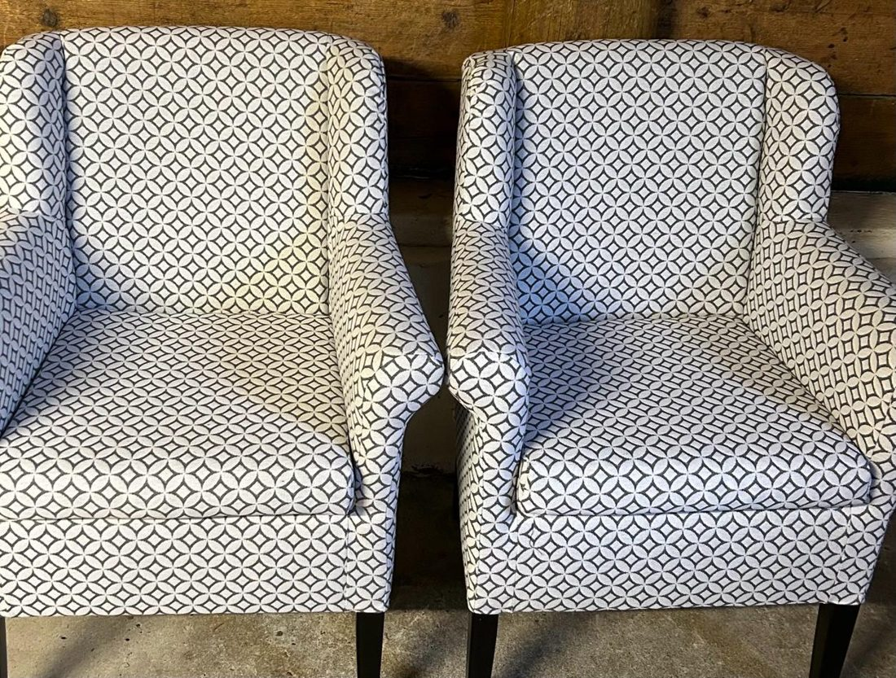
Meubels stofferen
Stoelen, fauteuils en banken
Een nieuw stofje, de zitting opnieuw opvullen, poten of leuningen vervangen of een ander kleurtje. Daar knapt je interieur van op.
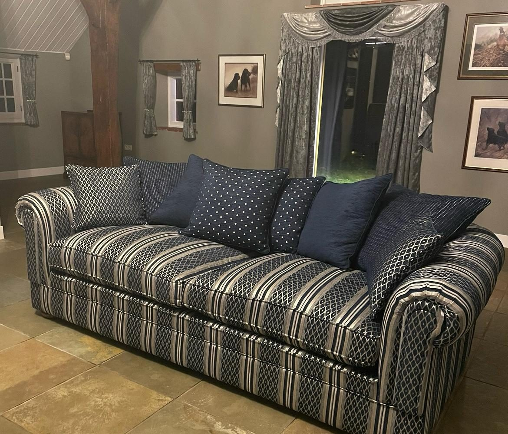
We stofferen stoelen, fauteuils en banken, en geven boot- en camperinterieurs een opfrisbeurt. Met eerlijk advies, vanuit ons atelier in Made.
Van stoelen en fauteuils tot zadels, bootkussens en camperinterieurs.

Een nieuw stofje, de zitting opnieuw opvullen, poten of leuningen vervangen of een ander kleurtje. Daar knapt je interieur van op.
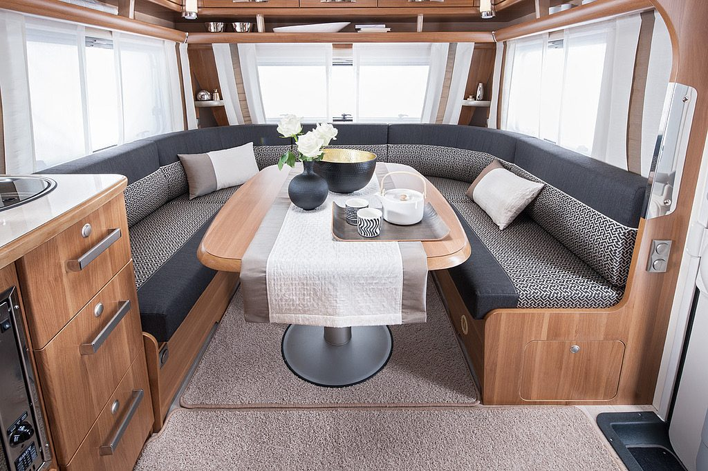
Nieuwe stof en vulling voor de kussens. Zo krijgt je camper of boot snel de knusse binnenruimte terug.
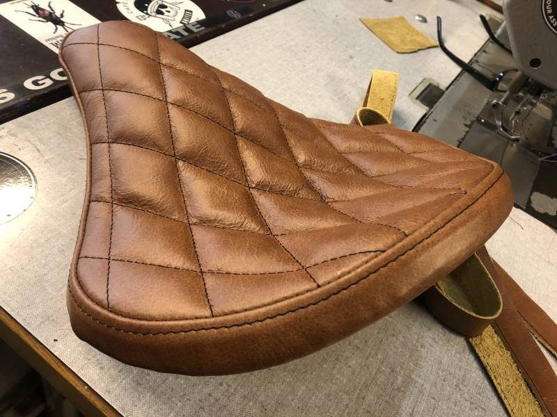
Zadels herstellen, kantoorstoelen een nieuwe look geven of een winkel bekleden. Vraag gerust wat er kan.
We werken voor interieurontwerpers, architecten, horeca en circulaire dienstverleners. Ons werk zie je ook in kantoren en winkelinrichtingen. Voor grote projecten hebben we een goed netwerk achter ons staan.
Een nieuw stofje, nieuwe vulling of een andere kleur: zo krijgen meubels een tweede leven.
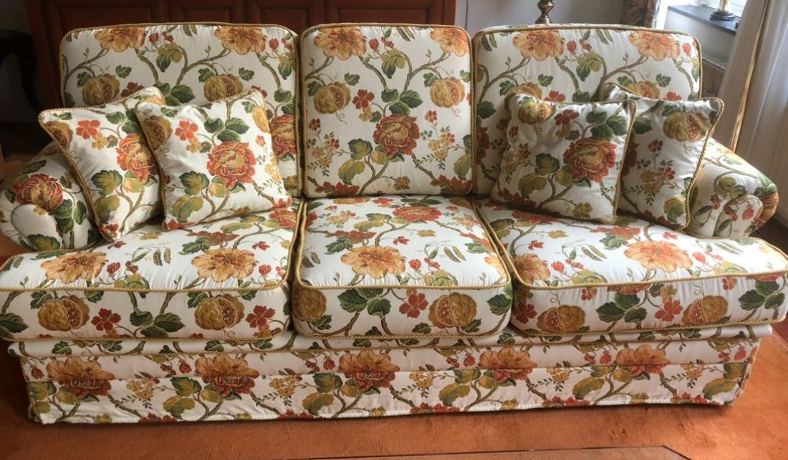
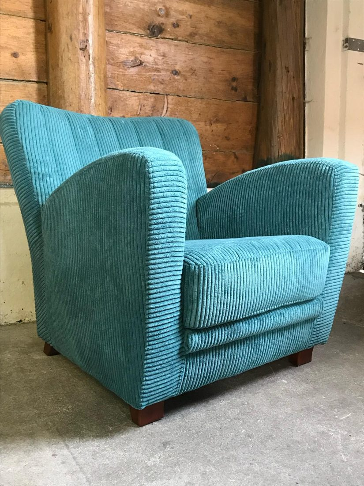
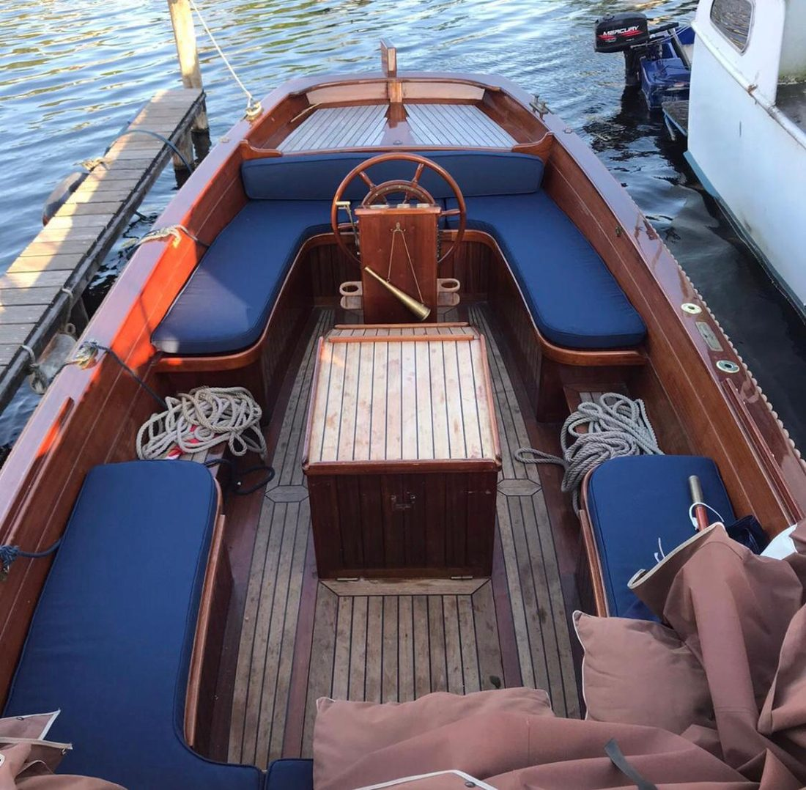
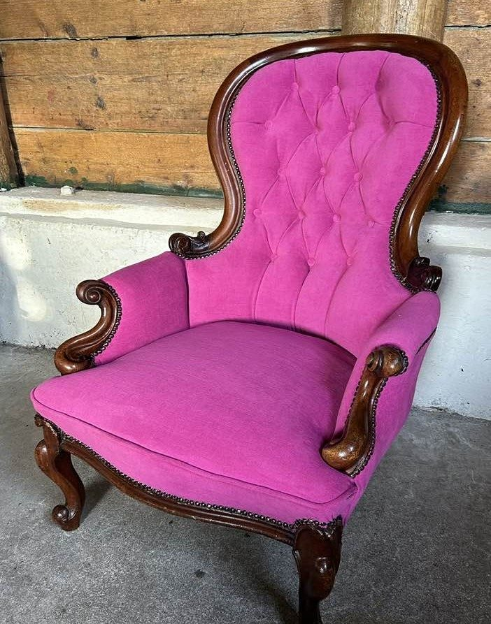
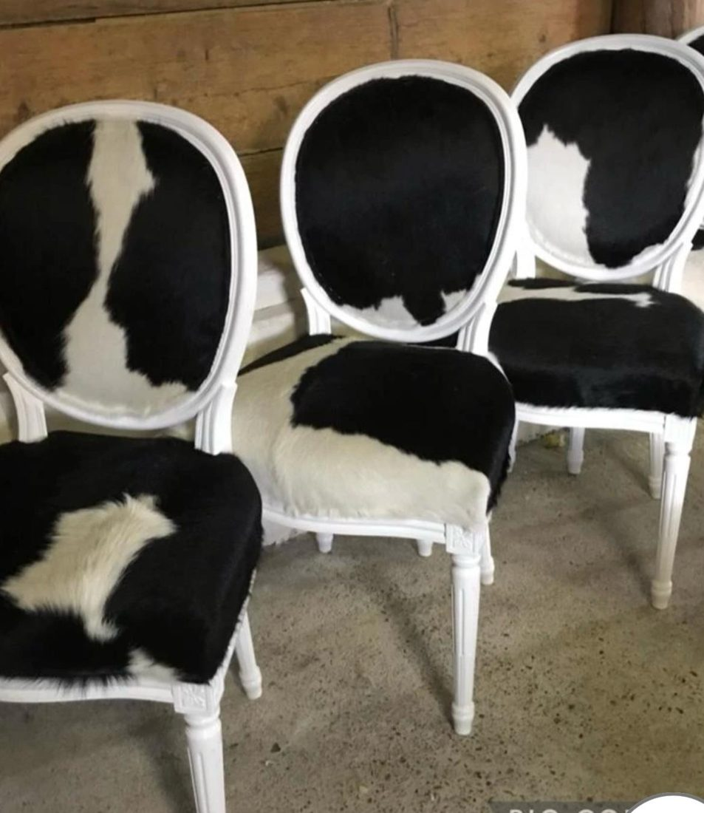
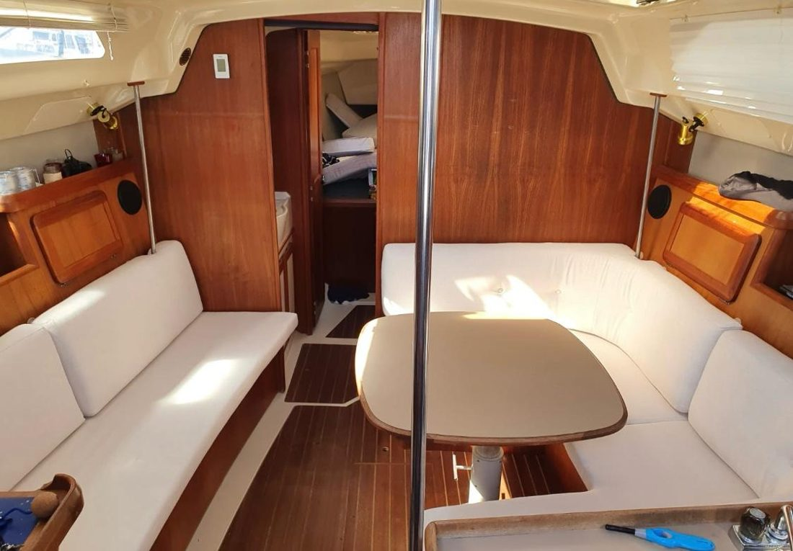
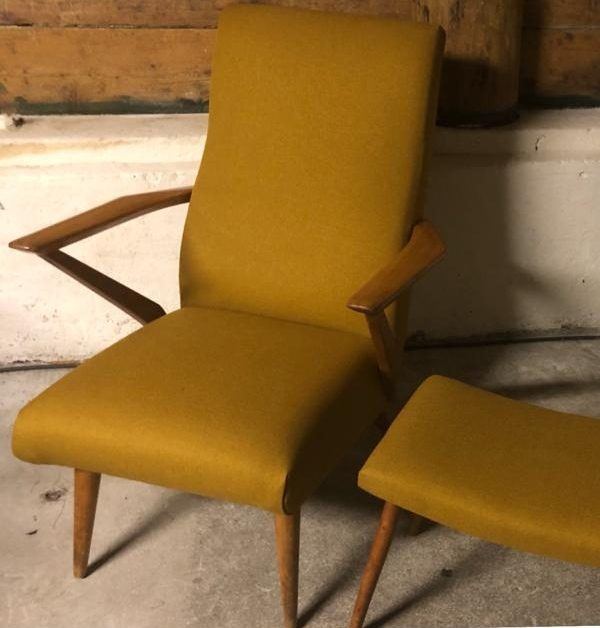
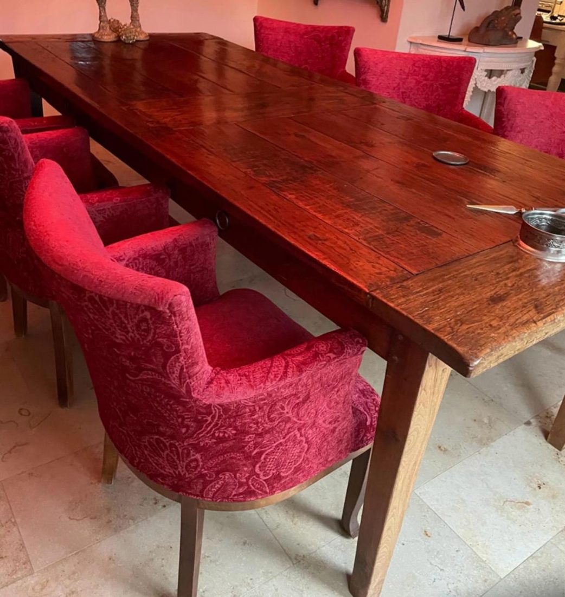
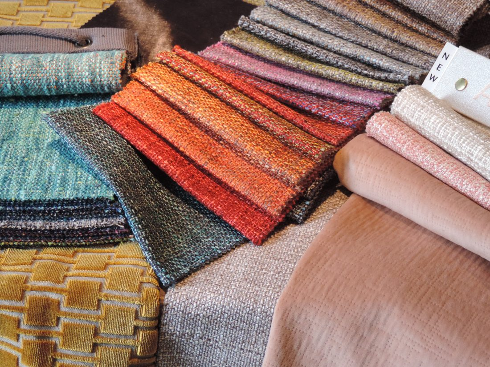
Bel, app of mail AnneMarie, dan bespreken we de mogelijkheden.
We komen bij je langs, of je brengt de meubels, kussens of zadels naar ons atelier. Daar adviseren we je over kleur en materiaal.
We beoordelen de staat en kwaliteit, meten alles op en maken een goede prijs.
Na akkoord gaan we aan de slag en geven we een globale levertijd. Is het klaar, dan laten we het weten.
We geven geen offertes op basis van foto's of e-mail. We willen het meubel eerst in handen hebben, zodat we het goed kunnen beoordelen.
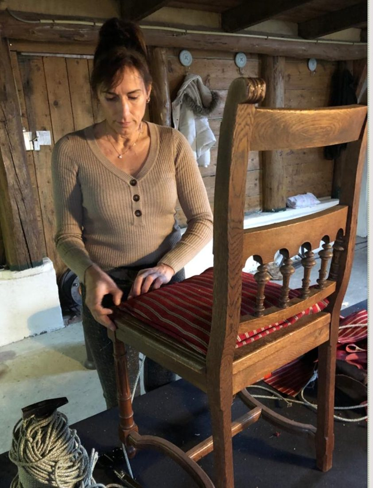
"Geen flauwekul of gedoe, wel een oprecht advies, zodat jouw spullen een verrassend tweede leven krijgen."
VONK Meubelstoffeerderij is van AnneMarie Vonk. Ze begon in 1995 in Schoonhoven en heeft sinds 2013 haar atelier in Made. Door die jarenlange ervaring weten we wat we voor je kunnen doen.
Particulieren en zakelijke klanten zijn van harte welkom in het atelier.
Vertel kort wat je wilt laten stofferen. We nemen contact op om te kijken wanneer we langskomen, of wanneer je het kunt brengen.
AnneMarie denkt graag met je mee.